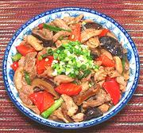

|
Mongolian ChickenChina - North - Mong Ku Gai Pin | ||||
| Serves: Effort: Sched: DoAhead: |
3 w/rice *** 1-3/4 hrs Yes |
I don't know if this recipe actually has any association with Mongolia, but it deserves its reputation as delicious. Mmaking ahead, do up to stirring in the Bell Pepper mix, continue after reheating. | |||
|
4 1 ------- 1 1/3 1/3 1 ------- 2 1 1/2 ------- 6 5 ------- 1 1/2 2 1/2 1/2 ------- 1 1 ------- 1 1/2 |
# ---- T t t T ---- cl oz T ---- oz ---- T T T c T ---- t T ---- T T |
Black Mushrooms Chicken meat (1) -- Marinade Oil Salt Sugar Cornstarch -- Aromatics Garlic Onion Chili Flake (2) -- Vegies Bell Pepper, red Scallions -- Sauce Bean Sauce, blk (3) Sugar Rice Wine (4) Stock, Chicken Soy Sauce, dark (5) -- Thickener Cornstarch Water ---------------- Oil Sesame Oil, dark |
Prep - (1 hr - 35 min work)
|